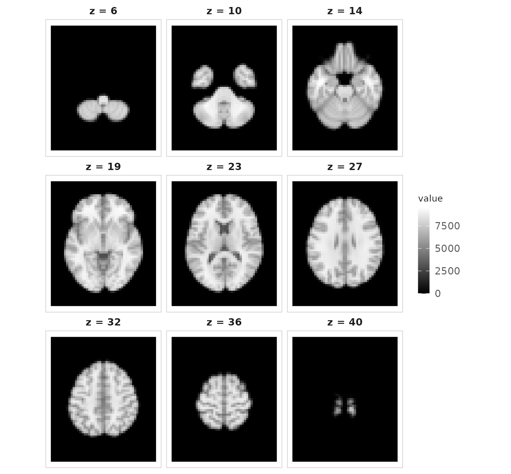
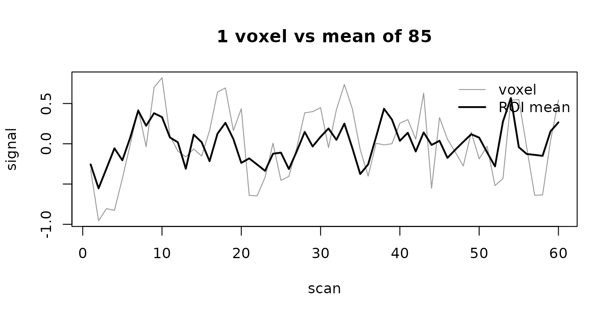
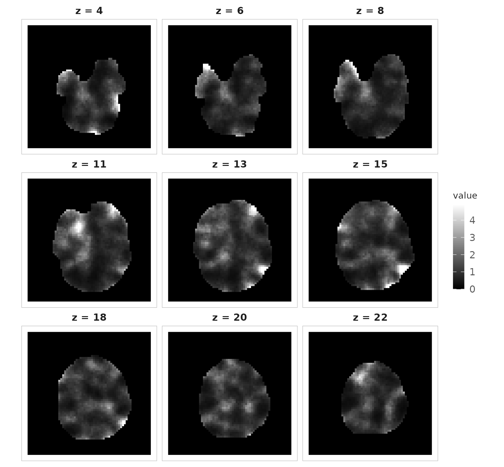

Look at an image
anat <- read_vol(system.file("extdata", "mni_downsampled.nii.gz", package = "neuroim2"))
plot(anat, zlevels = round(seq(6, 40, length.out = 9)))
plot() on a NeuroVol: a montage of evenly spaced axial slices.
That is a brain, read from a NIfTI file in one line and drawn in another. It is also an ordinary R array:
Indexing, arithmetic and comparison all work. The part that matters is what comes back: a comparison gives an image, not a bare logical array.
class(anat > 100)[1]
#> [1] "LogicalNeuroVol"Everything in this package is built on that — objects that behave like arrays but never forget their geometry.
From millimetres to voxels
An image is not just numbers; it is numbers somewhere. That
somewhere is a NeuroSpace, attached to every object, and it
is what separates neuroimaging from array programming.
Here we switch images. Anatomical and functional scans are separate acquisitions on separate grids, and the rest of this tour works in the functional one — a brain mask on the grid an EPI run was acquired on.
mask <- read_vol(system.file("extdata", "global_mask2.nii.gz", package = "neuroim2"))
spacing(mask)
#> [1] 3.5 3.5 3.7
affine_to_axcodes(trans(mask))
#> [1] "L" "A" "S"spacing() says these voxels are 3.5 x 3.5 x 3.7 mm. The
axis codes say the first array axis increases towards the left
(L), the second towards the anterior (A), and
the third towards the superior (S).
space(mask) prints all of it at once, and
origin() and trans() pull out the remaining
pieces.
Those codes describe the voxel grid. The millimetre coordinates themselves are always RAS — x increasing to the right, y forward, z up — so a negative x is on the left whichever way the grid happens to run.
With that, the package can answer the question you actually care about: which voxel sits at this location?
g <- coord_to_grid(mask, c(-34, -28, 10))
g
#> [1] 42.71429 24.00000 16.20270A point 34 mm left, 28 mm behind and 10 mm above this image’s world origin becomes a position on its grid. The answer is fractional because a millimetre coordinate rarely lands on a voxel centre. Going back is exact:
grid_to_coord(mask, matrix(g, nrow = 1))
#> [,1] [,2] [,3]
#> [1,] -34 -28 10Keep the fractional position if you are going to interpolate, and round it only when you need an integer index — rounding moves you up to half a voxel, which here is about 1.8 mm on any one axis:
grid_to_coord(mask, matrix(round(g), nrow = 1))
#> [,1] [,2] [,3]
#> [1,] -35 -28 9.25This image is in native scanner space, not a template space, so its
origin is wherever the scanner put it. Reading anatomical labels off
these numbers would require a registered image;
vignette("spaces-and-coordinates") covers how to tell what
space you are actually in.
Add a time axis
Functional data has a fourth dimension. read_vec() reads
4D files; here we simulate a run instead, so the time series in this
article have the temporal structure real BOLD data has.
bold <- simulate_fmri(mask, n_time = 60, seed = 1)
dim(bold)
#> [1] 64 64 25 60A NeuroVec is 60 volumes sharing one spatial frame. Pull
the time course of a single voxel with series():
vox <- round(g)
ts <- series(bold, vox[1], vox[2], vox[3])
plot(ts, type = "l", xlab = "scan", ylab = "signal", main = "Single voxel")One voxel’s simulated BOLD time course.
Summarise a region
Single voxels are noisy, so analyses usually work over a region. Put a 10 mm sphere at that voxel and extract every time course inside it.
roi <- spherical_roi(mask, vox, radius = 10, nonzero = TRUE)
length(roi)
#> [1] 85Note the mixed units: the centre is a voxel index, the radius is
millimetres. nonzero = TRUE drops voxels outside the mask —
this sphere sits well inside the brain so it removes none, but near the
edge it does the work.
roi_ts <- series_roi(bold, roi)
dim(values(roi_ts))
#> [1] 60 85values() returns scans by voxels, so
averaging across columns gives the region’s mean time course:
roi_mean <- rowMeans(values(roi_ts))
plot(ts, type = "l", col = "grey60", xlab = "scan", ylab = "signal",
main = paste("1 voxel vs mean of", length(roi)))
lines(roi_mean, lwd = 2)
legend("topright", c("voxel", "ROI mean"), col = c("grey60", "black"),
lwd = c(1, 2), bty = "n")
Single voxel and region mean on a shared axis. Averaging halves the amplitude.
Averaging cuts the amplitude roughly in half rather than by the square root of 85, because the simulation gives nearby voxels shared spatial structure — the same reason real BOLD voxels are not independent samples.
That is the shape of most work in this package: define a spatial support, extract values from it, reduce them to something smaller.
Make a result and write it out
Reductions run the other way too — from a 4D series down to one volume. Here is each voxel’s temporal standard deviation, a standard quality-control map:
mat <- as.matrix(bold)
sd_map <- NeuroVol(apply(mat, 1, sd), drop_dim(space(bold)))
plot(sd_map,
zlevels = round(seq(4, 22, length.out = 9)),
irange = c(0, quantile(sd_map[sd_map > 0], 0.99))
)
Temporal standard deviation per voxel, on a robust intensity range.
Three things are worth pulling out of those four lines.
as.matrix() flattens a NeuroVec to
voxels by time — the transpose of what
values() gave us above, so check the orientation whenever
you switch between them. drop_dim() takes the 4D space down
to the matching 3D one, which is what keeps the result aligned with its
source. And QC maps need a robust intensity range: a handful of edge
voxels here run to five times the 99th percentile, and on the default
full range they would flatten everything else to black.
The result is a proper NeuroVol, so writing it produces
a NIfTI any other tool can read — including this one:
out <- tempfile(fileext = ".nii.gz")
write_vol(sd_map, out)
back <- read_vol(out)
all.equal(spacing(back), spacing(sd_map))
#> [1] TRUE
max(abs(back - sd_map))
#> [1] 7.766264e-07The values differ in the seventh decimal place because NIfTI stored
them as 32-bit floats. Compare images with a tolerance, not
identical().
Where to go next
You have now read images, inspected their geometry, moved between millimetres and voxels, extracted a region’s time course, reduced a series to a map, and written it back to disk. Three articles finish the foundations, in this order:
-
vignette("spaces-and-coordinates")— the affine, orientation codes and conversions in full. Read this next; everything else assumes it. -
vignette("volumes-and-vectors")— building, slicing and combining the containers. -
vignette("reading-and-writing")— file formats, headers, and the header problem that silently produces wrong coordinates.
Then pick a task: vignette("regions-and-searchlights"),
vignette("resampling-and-orientation"),
vignette("smoothing-and-filtering"),
vignette("visualization"), or
vignette("large-data").